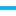

<!doctype html>
<html lang="en">
    <head>
        <meta charset="utf-8">
        <meta http-equiv="X-UA-Compatible" content="IE=edge">
        <meta name="viewport" content="initial-scale=1,user-scalable=no,maximum-scale=1,width=device-width">
        <meta name="mobile-web-app-capable" content="yes">
        <meta name="apple-mobile-web-app-capable" content="yes">
        <link rel="stylesheet" href="css/leaflet.css">
        <link rel="stylesheet" href="css/qgis2web.css"><link rel="stylesheet" href="css/fontawesome-all.min.css">
        <link rel="stylesheet" href="css/leaflet-measure.css">
        <style>
        html, body, #map {
            width: 100%;
            height: 100%;
            padding: 0;
            margin: 0;
        }
        </style>
        <title>Mapa amb icones SVG</title>
    </head>
    <body>
        <div id="map">
        </div>
        <script src="js/qgis2web_expressions.js"></script>
        <script src="js/leaflet.js"></script>
        <script src="js/leaflet.rotatedMarker.js"></script>
        <script src="js/leaflet.pattern.js"></script>
        <script src="js/leaflet-hash.js"></script>
        <script src="js/Autolinker.min.js"></script>
        <script src="js/rbush.min.js"></script>
        <script src="js/labelgun.min.js"></script>
        <script src="js/labels.js"></script>
        <script src="js/leaflet-measure.js"></script>
        <script src="data/qgismapstrack_3.js"></script>
        <script src="data/qgismapswaypoints_4.js"></script>
        <script>
        var highlightLayer;
        function highlightFeature(e) {
            highlightLayer = e.target;

            if (e.target.feature.geometry.type === 'LineString') {
              highlightLayer.setStyle({
                color: '#ffff00',
              });
            } else {
              highlightLayer.setStyle({
                fillColor: '#ffff00',
                fillOpacity: 1
              });
            }
        }
        var map = L.map('map', {
            zoomControl:true, maxZoom:28, minZoom:1
        }).fitBounds([[41.10196667802006,1.1460668835940955],[41.10345243552963,1.1495714714039686]]);
        var hash = new L.Hash(map);
        map.attributionControl.setPrefix('<a href="https://github.com/tomchadwin/qgis2web" target="_blank">qgis2web</a> &middot; <a href="https://leafletjs.com" title="A JS library for interactive maps">Leaflet</a> &middot; <a href="https://qgis.org">QGIS</a>');
        var autolinker = new Autolinker({truncate: {length: 30, location: 'smart'}});
        var measureControl = new L.Control.Measure({
            position: 'topleft',
            primaryLengthUnit: 'meters',
            secondaryLengthUnit: 'kilometers',
            primaryAreaUnit: 'sqmeters',
            secondaryAreaUnit: 'hectares'
        });
        measureControl.addTo(map);
        document.getElementsByClassName('leaflet-control-measure-toggle')[0]
        .innerHTML = '';
        document.getElementsByClassName('leaflet-control-measure-toggle')[0]
        .className += ' fas fa-ruler';
        var bounds_group = new L.featureGroup([]);
        function setBounds() {
        }
        map.createPane('pane_PNOASpain_0');
        map.getPane('pane_PNOASpain_0').style.zIndex = 400;
        var layer_PNOASpain_0 = L.tileLayer('http://www.ign.es/wmts/pnoa-ma?request=GetTile&service=WMTS&VERSION=1.0.0&Layer=OI.OrthoimageCoverage&Style=default&Format=image/png&TileMatrixSet=GoogleMapsCompatible&TileMatrix={z}&TileRow={y}&TileCol={x}', {
            pane: 'pane_PNOASpain_0',
            opacity: 1.0,
            attribution: '<a href="">PNOA</a>',
            minZoom: 1,
            maxZoom: 28,
            minNativeZoom: 0,
            maxNativeZoom: 20
        });
        layer_PNOASpain_0;
        map.createPane('pane_StamenTonerHybrid_1');
        map.getPane('pane_StamenTonerHybrid_1').style.zIndex = 401;
        var layer_StamenTonerHybrid_1 = L.tileLayer('http://tile.stamen.com/toner-hybrid/{z}/{x}/{y}.png', {
            pane: 'pane_StamenTonerHybrid_1',
            opacity: 1.0,
            attribution: '<a href="http://maps.stamen.com/">Map tiles by Stamen Design, under CC BY 3.0. Data by OpenStreetMap, under ODbL</a>',
            minZoom: 1,
            maxZoom: 28,
            minNativeZoom: 0,
            maxNativeZoom: 20
        });
        layer_StamenTonerHybrid_1;
        map.createPane('pane_GoogleSatelliteHybrid_2');
        map.getPane('pane_GoogleSatelliteHybrid_2').style.zIndex = 402;
        var layer_GoogleSatelliteHybrid_2 = L.tileLayer('https://mt1.google.com/vt/lyrs=y&x={x}&y={y}&z={z}', {
            pane: 'pane_GoogleSatelliteHybrid_2',
            opacity: 1.0,
            attribution: '',
            minZoom: 1,
            maxZoom: 28,
            minNativeZoom: 0,
            maxNativeZoom: 19
        });
        layer_GoogleSatelliteHybrid_2;
        map.addLayer(layer_GoogleSatelliteHybrid_2);
        function pop_qgismapstrack_3(feature, layer) {
            layer.on({
                mouseout: function(e) {
                    for (i in e.target._eventParents) {
                        e.target._eventParents[i].resetStyle(e.target);
                    }
                },
                mouseover: highlightFeature,
            });
            var popupContent = '<table>\
                    <tr>\
                        <td colspan="2">' + (feature.properties['fid'] !== null ? autolinker.link(feature.properties['fid'].toLocaleString()) : '') + '</td>\
                    </tr>\
                    <tr>\
                        <td colspan="2">' + (feature.properties['name'] !== null ? autolinker.link(feature.properties['name'].toLocaleString()) : '') + '</td>\
                    </tr>\
                    <tr>\
                        <td colspan="2">' + (feature.properties['cmt'] !== null ? autolinker.link(feature.properties['cmt'].toLocaleString()) : '') + '</td>\
                    </tr>\
                    <tr>\
                        <td colspan="2">' + (feature.properties['desc'] !== null ? autolinker.link(feature.properties['desc'].toLocaleString()) : '') + '</td>\
                    </tr>\
                    <tr>\
                        <td colspan="2">' + (feature.properties['src'] !== null ? autolinker.link(feature.properties['src'].toLocaleString()) : '') + '</td>\
                    </tr>\
                    <tr>\
                        <td colspan="2">' + (feature.properties['link1_href'] !== null ? autolinker.link(feature.properties['link1_href'].toLocaleString()) : '') + '</td>\
                    </tr>\
                    <tr>\
                        <td colspan="2">' + (feature.properties['link1_text'] !== null ? autolinker.link(feature.properties['link1_text'].toLocaleString()) : '') + '</td>\
                    </tr>\
                    <tr>\
                        <td colspan="2">' + (feature.properties['link1_type'] !== null ? autolinker.link(feature.properties['link1_type'].toLocaleString()) : '') + '</td>\
                    </tr>\
                    <tr>\
                        <td colspan="2">' + (feature.properties['link2_href'] !== null ? autolinker.link(feature.properties['link2_href'].toLocaleString()) : '') + '</td>\
                    </tr>\
                    <tr>\
                        <td colspan="2">' + (feature.properties['link2_text'] !== null ? autolinker.link(feature.properties['link2_text'].toLocaleString()) : '') + '</td>\
                    </tr>\
                    <tr>\
                        <td colspan="2">' + (feature.properties['link2_type'] !== null ? autolinker.link(feature.properties['link2_type'].toLocaleString()) : '') + '</td>\
                    </tr>\
                    <tr>\
                        <td colspan="2">' + (feature.properties['number'] !== null ? autolinker.link(feature.properties['number'].toLocaleString()) : '') + '</td>\
                    </tr>\
                    <tr>\
                        <td colspan="2">' + (feature.properties['type'] !== null ? autolinker.link(feature.properties['type'].toLocaleString()) : '') + '</td>\
                    </tr>\
                </table>';
            layer.bindPopup(popupContent, {maxHeight: 400});
        }

        function style_qgismapstrack_3_0() {
            return {
                pane: 'pane_qgismapstrack_3',
                opacity: 1,
                color: 'rgba(0,176,248,1.0)',
                dashArray: '',
                lineCap: 'square',
                lineJoin: 'bevel',
                weight: 4.0,
                fillOpacity: 0,
                interactive: false,
            }
        }
        map.createPane('pane_qgismapstrack_3');
        map.getPane('pane_qgismapstrack_3').style.zIndex = 403;
        map.getPane('pane_qgismapstrack_3').style['mix-blend-mode'] = 'normal';
        var layer_qgismapstrack_3 = new L.geoJson(json_qgismapstrack_3, {
            attribution: '',
            interactive: false,
            dataVar: 'json_qgismapstrack_3',
            layerName: 'layer_qgismapstrack_3',
            pane: 'pane_qgismapstrack_3',
            onEachFeature: pop_qgismapstrack_3,
            style: style_qgismapstrack_3_0,
        });
        bounds_group.addLayer(layer_qgismapstrack_3);
        map.addLayer(layer_qgismapstrack_3);
        function pop_qgismapswaypoints_4(feature, layer) {
            layer.on({
                mouseout: function(e) {
                    for (i in e.target._eventParents) {
                        e.target._eventParents[i].resetStyle(e.target);
                    }
                },
                mouseover: highlightFeature,
            });
            var popupContent = '<table>\
                    <tr>\
                        <td colspan="2">' + (feature.properties['html_popup'] !== null ? autolinker.link(feature.properties['html_popup'].toLocaleString()) : '') + '</td>\
                    </tr>\
                </table>';
            layer.bindPopup(popupContent, {maxHeight: 400});
        }

        function style_qgismapswaypoints_4_0() {
            return {
                pane: 'pane_qgismapswaypoints_4',
        rotationAngle: 0.0,
        rotationOrigin: 'center center',
        icon: L.icon({
            iconUrl: 'markers/Circle-icons-camera.svg',
            iconSize: [53.199999999999996, 53.199999999999996]
        }),
                interactive: true,
            }
        }
        map.createPane('pane_qgismapswaypoints_4');
        map.getPane('pane_qgismapswaypoints_4').style.zIndex = 404;
        map.getPane('pane_qgismapswaypoints_4').style['mix-blend-mode'] = 'normal';
        var layer_qgismapswaypoints_4 = new L.geoJson(json_qgismapswaypoints_4, {
            attribution: '',
            interactive: true,
            dataVar: 'json_qgismapswaypoints_4',
            layerName: 'layer_qgismapswaypoints_4',
            pane: 'pane_qgismapswaypoints_4',
            onEachFeature: pop_qgismapswaypoints_4,
            pointToLayer: function (feature, latlng) {
                var context = {
                    feature: feature,
                    variables: {}
                };
                return L.marker(latlng, style_qgismapswaypoints_4_0(feature));
            },
        });
        bounds_group.addLayer(layer_qgismapswaypoints_4);
        map.addLayer(layer_qgismapswaypoints_4);
            var title = new L.Control();
            title.onAdd = function (map) {
                this._div = L.DomUtil.create('div', 'info');
                this.update();
                return this._div;
            };
            title.update = function () {
                this._div.innerHTML = '<h2>Mapa amb icones SVG</h2>';
            };
            title.addTo(map);
            var abstract = new L.Control({'position':'bottomright'});
            abstract.onAdd = function (map) {
                this._div = L.DomUtil.create('div',
                'leaflet-control abstract');
                this._div.id = 'abstract'

                    abstract.show();
                    return this._div;
                };
                abstract.show = function () {
                    this._div.classList.remove("abstract");
                    this._div.classList.add("abstractUncollapsed");
                    this._div.innerHTML = 'Aquest és el resum del mapa introduit en les propietats del projecte de QGIS...';
            };
            abstract.addTo(map);
        var baseMaps = {};
        L.control.layers(baseMaps,{' qgis-maps waypoints': layer_qgismapswaypoints_4,' qgis-maps track': layer_qgismapstrack_3,"Google Satellite Hybrid": layer_GoogleSatelliteHybrid_2,"Stamen Toner Hybrid": layer_StamenTonerHybrid_1,"PNOA Spain": layer_PNOASpain_0,}).addTo(map);
        setBounds();
        resetLabels([layer_qgismapswaypoints_4]);
        map.on("zoomend", function(){
            resetLabels([layer_qgismapswaypoints_4]);
        });
        map.on("layeradd", function(){
            resetLabels([layer_qgismapswaypoints_4]);
        });
        map.on("layerremove", function(){
            resetLabels([layer_qgismapswaypoints_4]);
        });
        </script>
    </body>
</html>
